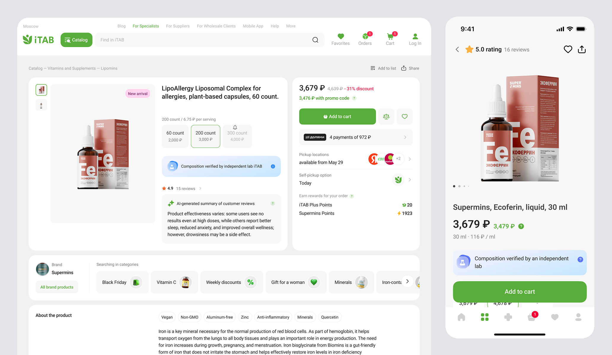
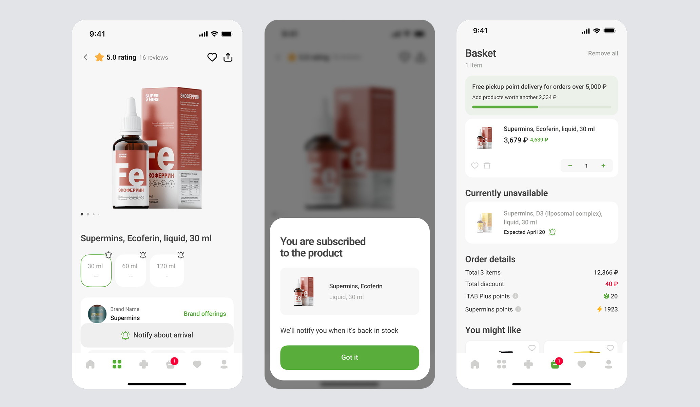
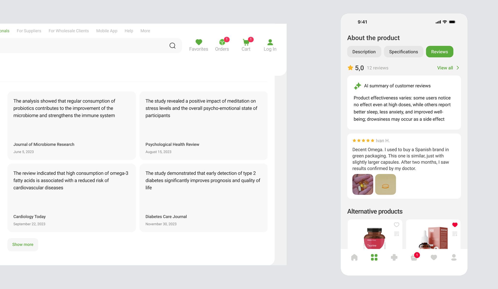
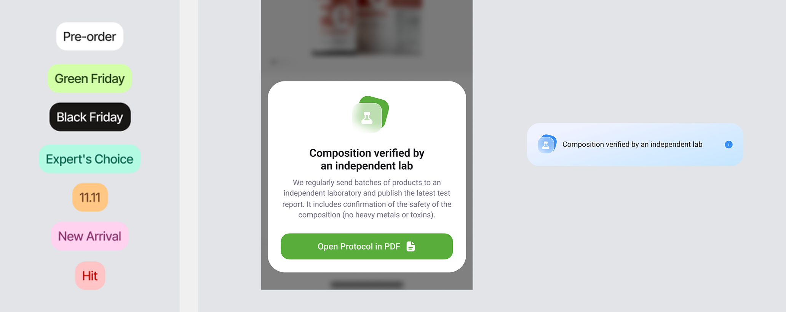

iTAB — redesigning a supplement product card for clearer decisions
iTAB is a health and wellness e-commerce product. As part of the project, I redesigned the product card across web and mobile to make product value, trust signals, and purchase actions clearer.



Problem
The product card in a high-trust category like supplements was a weak link in the conversion funnel — users dropped off instead of completing purchases. Users had to make purchase decisions with limited confidence: product benefits, composition, lab confirmation, reviews, and availability were scattered across the page or not clearly prioritized
Task
Redesign the product card across web and mobile to reduce drop-off in the supplements category. The card had to make evaluation clearer, strengthen trust signals at the decision point, and keep users in the funnel when their first choice was unavailable
Users
Users choose health and wellness products carefully. Before buying, they need to understand what the product is, whether the composition can be trusted, how it compares to alternatives, and what to do if the product is unavailable
What changed
I restructured the product card around the decision-making flow: product understanding, trust, comparison, purchase action, and fallback behavior
Research & design process
I started with two parallel inputs. An audit of the existing card against the trust-decision questions users were asking, and a scan of competitor cards across adjacent categories to see which conventions were already shaping expectations. The two together pointed to the same four gaps.
Purchase feedback
Post-click confirmation was not clear enough
Trust signals
Reviews, lab proof, and research were not connected into one flow
Unavailable state
Unavailable products needed a useful next step
1. Making purchase states clear and actionable
I defined purchase states for available and unavailable products. For available items, the CTA changes into quantity control after adding and gives immediate feedback. For unavailable items, the card provides a restock path and keeps users connected to alternatives instead of ending the journey




2. Building trust through reviews and evidence
I separated different trust layers inside the product card: research cards provide additional product context, while reviews and AI summary help users understand recurring customer feedback faster. This supports confidence without overloading the main purchase area.
I kept evidence as a supporting layer, so the card could strengthen trust without turning into a long medical article



3. Organizing supporting signals without overloading the card
I organized badges, lab confirmation, category markers, and promotional labels into a clearer visual system. For trust markers, I added an interaction layer so users could access extra context on demand without overloading the main card.



Result
After launch, fewer users dropped off at the product card step, more of them completed add-to-cart in the supplements category, and unavailable products stopped being a dead end — a meaningful share of users continued through restock or alternatives instead of leaving, turning a former exit point into a recovery path
The redesigned card also became the system standard across the catalog, giving the team a reusable foundation for future product categories and a shared visual language for trust, availability, and purchase states